Tutorial: Script a trigger
Warning
Приносим свои извинения за неудобства. Для этой страницы нет перевода на русский язык. Она будет отображаться на английском языке.
Beginner Designer
In this tutorial, we'll create a trigger that doubles the size of a ball when the ball passes through it.
Note
The screenshots and videos in this tutorial were made using an earlier version of Stride, so some parts of the UI, and the default skybox and sphere, might look different from your version.
1. Create a bouncing ball
Follow the instructions in the Create a bouncing ball tutorial. This creates a simple scene in which a ball falls from mid-air, hits the ground, and bounces.
2. Set the restitution
For this tutorial, we'll set the restitution of both the ground and the sphere to 0.9, which makes the ball very bouncy. This makes it easier to see the effect of the trigger later, as the ball will bounce in and out of the trigger area repeatedly.
Select the Sphere entity.
In the Property Grid, under Rigidbody, set the Restitution to 0.9.
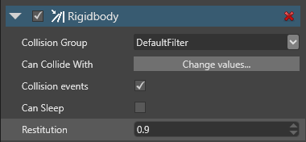
Select the Ground entity.
In the Property Grid, under Static Collider, set the Restitution to 0.9.
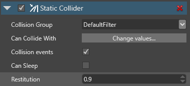
3. Add a trigger
Now we'll add a trigger between the ball and the ground, so the ball passes through it.
In the Scene Editor, click the white plus button (Create new entity) and select Empty entity.
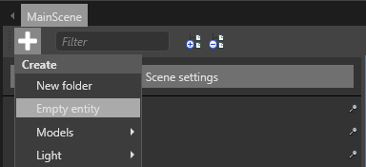
Game Studio adds an entity to the scene with the default name Entity.
This entity will be our trigger, so rename it Trigger to make it easy to identify.
Since we don't need the trigger to move, we'll make it a static collider. In the Property Grid, click Add component and select Static Collider.
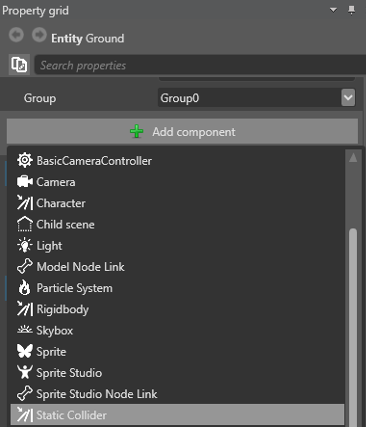
In the Property Grid, expand the Static Collider component to view its properties.
Select the Is Trigger checkbox.
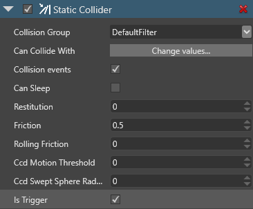
This makes the collider a trigger. This means objects can pass through it, but are still detected in the code.
We need to give the trigger a shape. Next to Collider Shapes, click
 (Add) and select Box.
(Add) and select Box.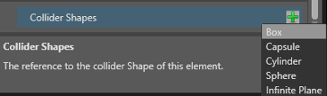
This gives the trigger a box shape.

Let's make the trigger a larger area. In the Property Grid, under the Transform component properties, set the scale to: X:2, Y:2, Z:2
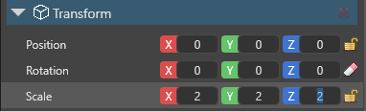
This doubles the size of the trigger.
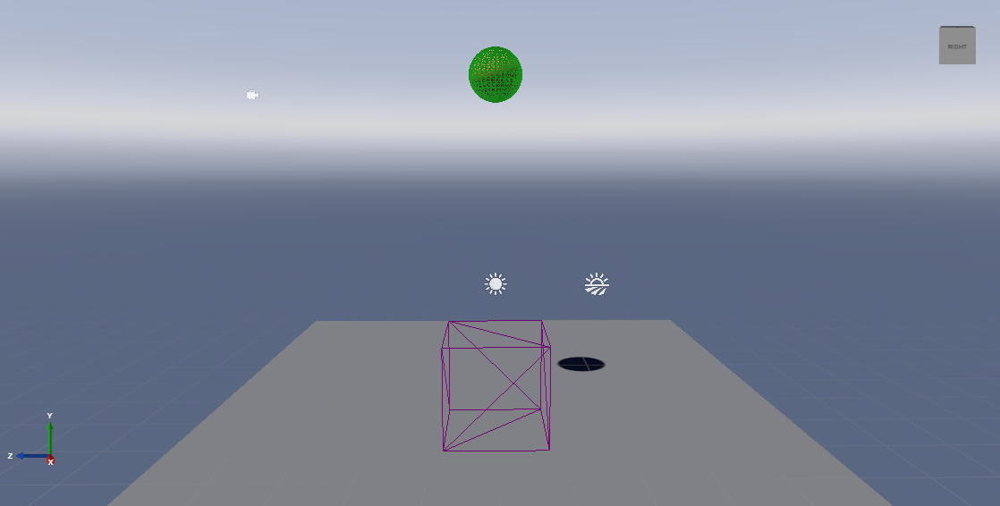
4. Give the trigger a model
Right now, the trigger is invisible at runtime. To better show how the trigger works, we'll make it a transparent box. This has no effect on how the trigger works; it just means we can easily see where it is at runtime.
Create a new procedural model asset. To do this, in the Asset View, click Add asset, and select Models > Cube.
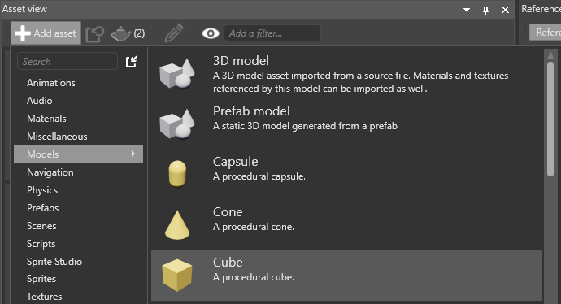
Create a new empty material asset. To do this, in the Asset View, click Add asset, and select Materials > Material.
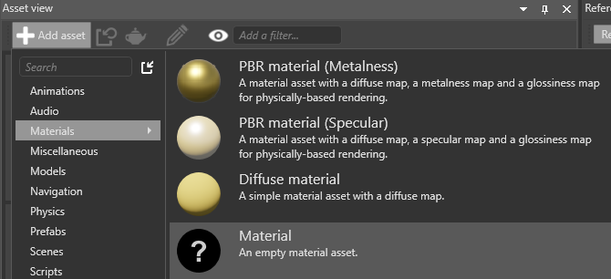
Let's rename the material to make it easy to identify. To do this, right-click, select Rename, and type a new name (eg Transparent).
Select the Trigger entity. In the Property Grid, click Add component and select Model.
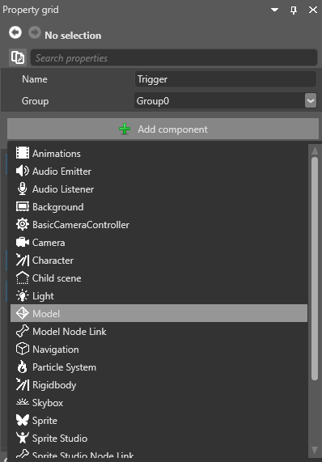
Game Studio adds a model component to the entity.
Under Model, click
 (Select an asset).
(Select an asset).
Select the Cube model we created in step 1 and click OK.
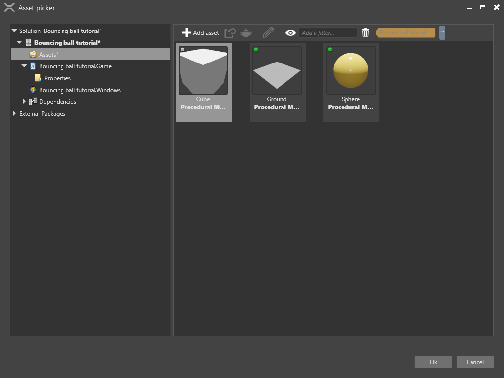
In the Property Grid, under Model > Materials, click
(Select an asset).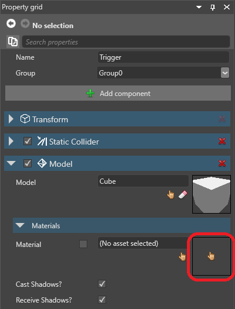
Select the Transparent material we created in step 2 and click OK.
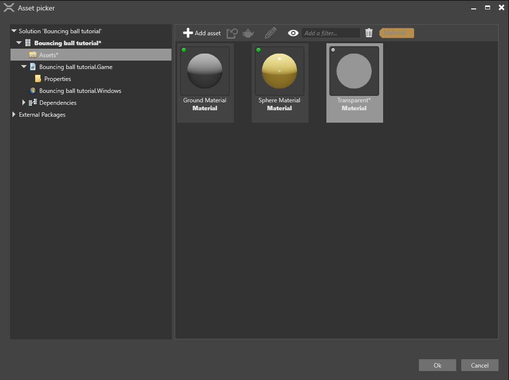
In the Asset View, select the Transparent material asset.
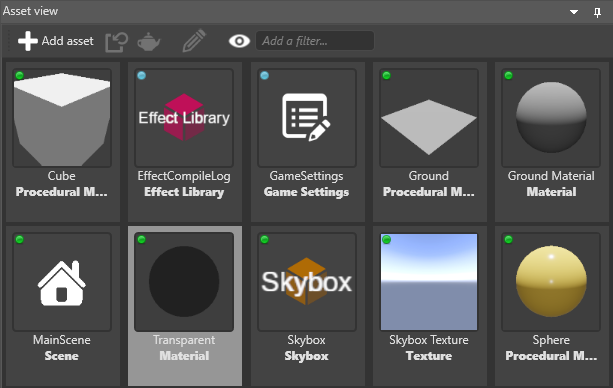
In the Property Grid, under Misc > Transparency, select Blend.
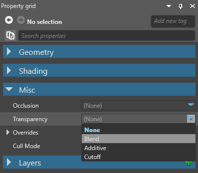
By default, the Alpha is set to 1. This makes the material completely opaque. To set it to 50% opacity, set the Alpha to 0.5.
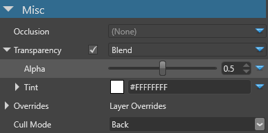
Now the trigger area will be visible at runtime.
5. Position the trigger
We need to position the trigger between the ground and the sphere, so the ball falls through it.
In the Property Grid, under Transform, set the Position to: X:0, Y:3, Z:0
Now the trigger entity is between the ground and the sphere:
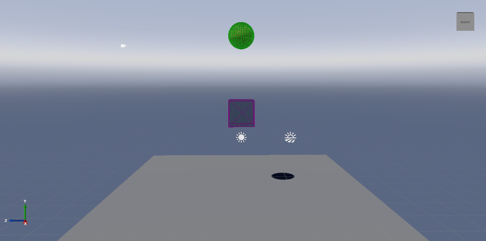
6. Change the sphere size with script
If we run the project now (F5), the ball falls through the trigger, but nothing happens.
Let's write a script to change the size of the ball when it enters the trigger.
Note
For more information about scripts, see Scripts.
In the Asset View, click Add asset and select Scripts > Async Script.
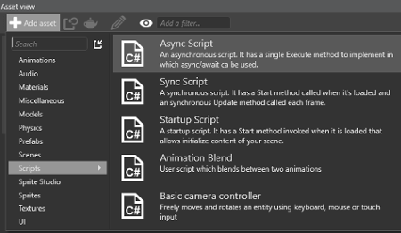
In the Create a script dialog, name your script Trigger and click Create script.
2a. If Game Studio asks if you want to save your script, click Save.
2b. If Game Studio asks if you want to reload the assemblies, click Reload.
Open the script, replace its content with the following code, and save the file:
using Stride.Engine; using Stride.Physics; using System.Threading.Tasks; using Stride.Core.Mathematics; namespace TransformTrigger // You can use any namespace you like for this script. { public class Trigger : AsyncScript { public override async Task Execute() { var trigger = Entity.Get<PhysicsComponent>(); trigger.ProcessCollisions = true; // Start state machine while (Game.IsRunning) { // 1. Wait for an entity to collide with the trigger var firstCollision = await trigger.NewCollision(); var otherCollider = trigger == firstCollision.ColliderA ? firstCollision.ColliderB : firstCollision.ColliderA; otherCollider.Entity.Transform.Scale = new Vector3(2.0f, 2.0f, 2.0f); // 2. Wait for the entity to exit the trigger await firstCollision.Ended(); otherCollider.Entity.Transform.Scale= new Vector3(1.0f, 1.0f, 1.0f); } } } }This code doubles the size (scale) of any entity that enters the trigger. When the entity exits the trigger, it returns to its original size.
Reload the assemblies.
7. Add the script
Finally, let's add this script to the trigger entity as a component.
In Game Studio, select the Trigger entity.
In the Property Grid, click Add component and select the Trigger script.
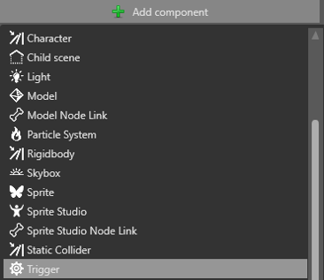
8. Run the project
Run the project (F5) to see the trigger in action.
The ball falls through the trigger, doubles in size, exits the trigger, and returns to its normal size.
More ideas
You can alter the script to make other changes when the sphere enters the trigger.
For example, you can switch the material on the sphere entity. This script switches the material on the Sphere entity from the Sphere Material to the Ground Material and back again:
using Stride.Engine;
using Stride.Physics;
using System.Threading.Tasks;
using Stride.Core.Mathematics;
using Stride.Rendering;
namespace TransformTrigger
// You can use any namespace you like for this script.
{
public class Trigger : AsyncScript
{
private Material material1;
private Material material2;
public override async Task Execute()
{
var trigger = Entity.Get<PhysicsComponent>();
trigger.ProcessCollisions = true;
// Make sure the materials are loaded
material1 = Content.Load<Material>("Sphere Material");
material2 = Content.Load<Material>("Ground Material");
// Start state machine
while (Game.IsRunning)
{
// 1. Wait for an entity to collide with the trigger
var firstCollision = await trigger.NewCollision();
var otherCollider = trigger == firstCollision.ColliderA
? firstCollision.ColliderB
: firstCollision.ColliderA;
// 2. Change the material on the entity
otherCollider.Entity.Get<ModelComponent>().Materials[0] = material2;
// 3. Wait for the entity to exit the trigger
await firstCollision.Ended();
// 4. Change the material back to the original one
otherCollider.Entity.Get<ModelComponent>().Materials[0] = material1;
}
}
public override void Cancel()
{
Content.Unload(material1);
Content.Unload(material2);
}
}
}